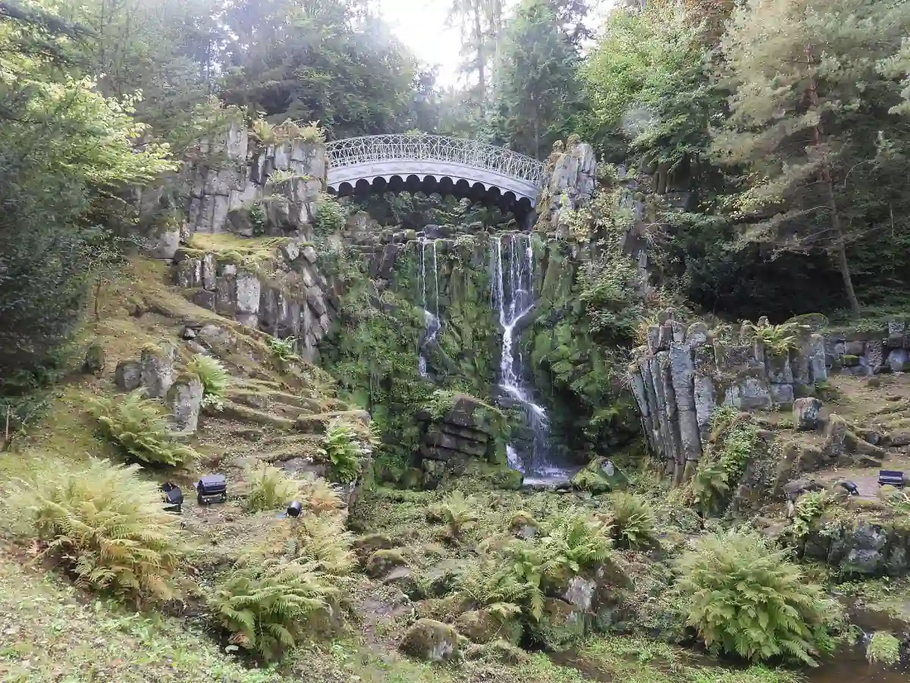

Start / documenta 2027
Aaron Schiele
geprüft am 09.10.2026
geprüft am 09.10.2026
Was ist die documenta?
Seit den Fünfzigerjahren kommt die documenta alle fünf Jahre für 100 Tage nach Kassel, deshalb heißt sie auch „Museum der hundert Tage“. Ihr Mittelpunkt ist bis heute das Fridericianum am Friedrichsplatz. Im Sommer ist die ganze Innenstadt voller Besucher aus aller Welt, und an vielen Ecken stößt du auf Kunst, auch dort, wo du sie nicht erwartest.
Künstlerische Leiterin der D16 ist Naomi Beckwith vom Solomon R. Guggenheim Museum in New York.
Wo findet die documenta 2027 statt?
Die D16 wird an mehreren Orten über das Stadtgebiet verteilt sein. Die Liste der Orte steht noch aus. Ein Leitsystem und ein kostenloser Lageplan sind geplant, und die Rundgänge starten am Welcome Center am Friedrichsplatz.
Zum Vergleich 2022: Damals waren unter anderem das Fridericianum, die documenta Halle, das Ottoneum, das Hallenbad Ost und die Karlsaue Ausstellungsorte. Gerade dieser Wechsel zwischen Museum, altem Hallenbad und Park macht den Reiz aus.
Wie voll wird es?
Zu den beiden letzten Ausgaben kamen jeweils Hunderttausende Besucher nach Kassel. Unterkünfte sind im documenta-Sommer entsprechend gefragt, mehr dazu unter Unterkunft zur documenta.
Praktisches: Tickets, Bus und Bahn, Anreise
Geöffnet ist an allen 100 Tagen, bei Veranstaltungen weichen die Zeiten teils ab.
Was kosten Tickets für die documenta 2027?
| Ticket | Preis | Ermäßigt | Hinweis |
|---|---|---|---|
| Tagesticket | 29 Euro | 19 Euro | ein Tag |
| 2-Tagesticket | 45 Euro | 32 Euro | zwei Tage hintereinander |
| Abendticket | 12 Euro | 8 Euro | ein Tag, 17 bis 20 Uhr |
| Dauerticket | 125 Euro | 100 Euro | ganze Laufzeit, auf deinen Namen |
| Familienticket | 60 Euro | – | bis zu zwei Erwachsene und drei Kinder bis 17 Jahre |
| Schulklassenticket | 7 Euro | – | je Schülerin, Schüler oder Lehrkraft |
| Soli-Ticket | 27 Euro | – | schenkt einer anderen Person den Eintritt |
Kinder bis einschließlich zwölf Jahre zahlen nichts. Gruppen ab elf Tickets sparen zehn Prozent. Jedes Ticket gilt für alle Ausstellungsorte. Weitergeben darfst du Tickets, nur die Dauerkarte nicht; zurückgenommen werden sie grundsätzlich nicht.
Kaufen kannst du im Onlineshop der D16, im Fridericianum und in der Tourist Information Kassel, Wilhelmsstraße 23.
Gilt das Ticket auch für Bus und Tram?
Ja. An dem Tag, für den dein Ticket gilt, fährst du damit bis Betriebsschluss kostenlos mit Bus und Bahn, nur die Dauerkarte ist ausgenommen. Innerhalb Kassels bist du damit sicher unterwegs. Kommst du von weiter her, frag vor dem Kauf kurz beim Besucherservice nach, wie weit das Ticket reicht.
Wo ist das Welcome Center?
Am Friedrichsplatz mitten in der Innenstadt. Hier starten alle geführten Rundgänge. An der Haltestelle Friedrichsplatz halten die Straßenbahnen 1, 3, 4, 5, 6 und 8, Fahrradstellplätze gibt es direkt vor dem Fridericianum.
Anreise mit dem ICE
ICE-Züge halten am Bahnhof Kassel-Wilhelmshöhe, nicht am Hauptbahnhof.
| Von | Fahrzeit (Std.) |
|---|---|
| Hannover | 0:50 |
| Frankfurt | 1:50 |
| Leipzig | 2:10 |
| Hamburg | 2:20 |
| Berlin | 2:40 |
Vom Bahnhof Wilhelmshöhe bringen dich die Linien 1, 3 und 4 ohne Umsteigen zum Friedrichsplatz. Vom Frankfurter Flughafen fährt ein ICE direkt nach Kassel-Wilhelmshöhe, vom Flughafen Kassel-Calden der Bus 100 ins Zentrum.
Mit dem Auto
Über A7, A49 und A44 kommst du in die Stadt. Am entspanntesten parkst du am Stadtrand auf Park & Ride und fährst mit der Tram weiter.
Häufige Fragen
Wann ist die nächste documenta?
Vom 12. Juni bis 19. September 2027 ist documenta 16 in Kassel.
Kann ich documenta-2027-Tickets schon kaufen?
Ja, der Vorverkauf läuft: online, im Fridericianum und in der Tourist Information Kassel.
Wie viel kostet die documenta für Kinder?
Bis einschließlich zwölf Jahre nichts. Schülerinnen und Schüler zahlen den ermäßigten Preis, und für die ganze Familie gibt es das Familienticket für 60 Euro.
Welches Ticket lohnt sich für mehrere Tage?
Für zwei Tage am Stück das 2-Tagesticket für 45 Euro. Ab dem fünften Besuchstag ist das Dauerticket für 125 Euro günstiger als einzelne Tagestickets, es gilt aber nur für dich.
Wer ist die Leiterin der documenta 16?
Naomi Beckwith vom Solomon R. Guggenheim Museum in New York.
Quellen abgerufen am 09.10.2026
- documenta 16 Häufige Fragen · Tickets · Neuigkeiten · Visit FAQ (englisch)
- documenta Besuchszahlen documenta fifteen
- Wikipedia documenta fifteen · documenta 14 · Fridericianum
Weiterlesen
Unterkunft zur documenta 2027
Übernachten zur documenta 2027 in Kassel: Innenstadt, Vorderer Westen, Bad Wilhelmshöhe, Bahnhof Wilhelmshöhe und Kirchditmold im Vergleich, mit Tram-Anbindung.
WeiterlesenKassel übernachten
Übernachten in Kassel: welche Stadtteile zu deinem Plan passen, warum der Bahnhof Wilhelmshöhe zählt und was die Übernachtungssteuer ausmacht.
Weiterlesen
Bergpark Wilhelmshöhe Kassel
Bergpark Wilhelmshöhe in Kassel: was dich im UNESCO-Welterbe erwartet, Eintritt (Park frei), ein Rundweg bergab für einen Tag und die Anreise.
Weiterlesen